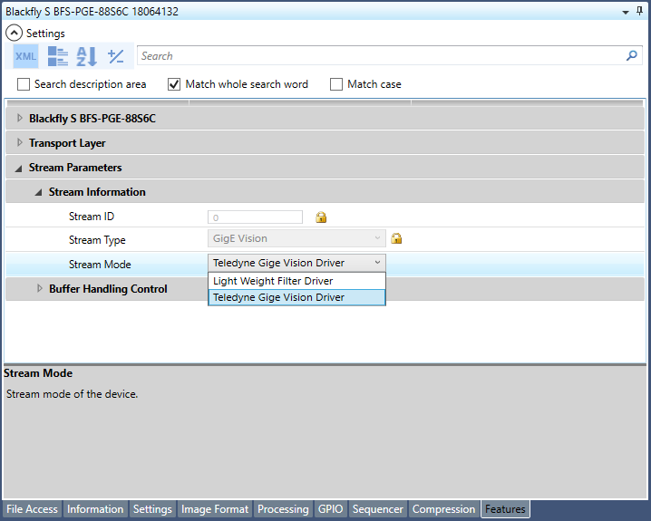

|
Spinnaker Managed |
| 4.2.0.83 |
|
Spinnaker Managed |
| 4.2.0.83 |
The Teledyne Spinnaker SDK offers three types of stream modes when acquiring images from a GigE camera depending on the platform you're running on and the hardware you have available. By default, when running on Windows, Spinnaker will stream with the Teledyne GigE Vision Driver stream mode; on Linux and MacOS, it will stream with the Socket stream mode. Alternatively, there is an option to select the Light Weight Filter Driver if there is a need for certain features such as multistream.
Note that certain stream modes are only available on certain operating systems:
• Teledyne GigE Vision Driver : Windows • Light Weight Filter Driver : Windows • Socket : Linux/MacOS
The Teledyne GigE Vision Filter Driver checks all incoming packets from the network interface card to determine if they contain image data. If so, the packet is forwarded to the GigE Vision driver, otherwise it is passed through to the host. If there are any issues with the Teledyne GigE Vision Driver, make sure that Teledyne GigE Vision's filter driver (CorGigEFilter) is installed. Check out the documentation from Teledyne's Network Imaging Package. This can be located by navigating to your install path and then going to Teledyne Network Imaging Package. You will need to make sure Spinnaker SDK 4.0 or later is installed along with Network Imaging Package 6.0 or later, which comes installed with the Spinnaker Windows Installer.
NOTE: Teledyne GigE Vision stream mode is only supported in Spinnaker SDK starting with Spinnaker 4.0. Users have the option to stream with either the LWF or Teledyne GigE Vision stream mode when the GigE camera is connected in Windows. However, we recommend that users stick to using the Teledyne GigE Vision Driver for most cases.
In this stream mode, images are filtered and processed through light weight filter driver. On Windows, this mode utilizes the NDIS kernel driver architecture to accelerate performance with a single copy from the network stack to the user memory buffer. You will need to make sure Teledyne's filter driver (PGRLWF) is installed, which comes installed with the Spinnaker Windows Installer.
For MacOS and Linux users the socket stream mode is available where images are received and processed through native operating system specific network sockets.
There is no specific setup required to acquire images using the Teledyne GigE Vision stream mode. Spinnaker will default to using the Teledyne GigE Vision driver. However, a GenICam GenTL Transport Layer DataStream node is available for GigE data streams if developers would like to manually switch between the stream modes.
Sample C++ code snippet demonstrating switching between the stream modes with Spinnaker GenICam GenAPI:
CEnumerationPtr streamMode = camera->GetTLStreamNodeMap().GetNode("StreamMode");
# Select LWF Stream Mode
streamMode->SetIntValue(streamMode->GetEntryByName("LWF")->GetValue());
# Select Teledyne GigE Vision Stream Mode
streamMode->SetIntValue(streamMode->GetEntryByName("TeledyneGigEVision")->GetValue());
# Select Socket Stream Mode
streamMode->SetIntValue(streamMode->GetEntryByName("Socket")->GetValue());
Sample C++ code snippet demonstrating switching between the stream modes with Spinnaker QuickSpin GenAPI:
# Select LWF Stream Mode camera->TLStream.StreamMode.SetValue(StreamMode_LWF); # Select Teledyne GigE Vision Stream Mode camera->TLStream.StreamMode.SetValue(StreamMode_TeledyneGigEVision); # Select Socket Stream Mode camera->TLStream.StreamMode.SetValue(StreamMode_Socket);
To switch between the stream modes in SpinView_WPF, simply navigate to the features tab and expand "Stream Parameters" and "Stream Information" and then click on the drop-down menu for "StreamMode" to select the available modes on your system.

There is also documentation available at: https://www.teledynedalsa.com/en/support/documentation/manuals/